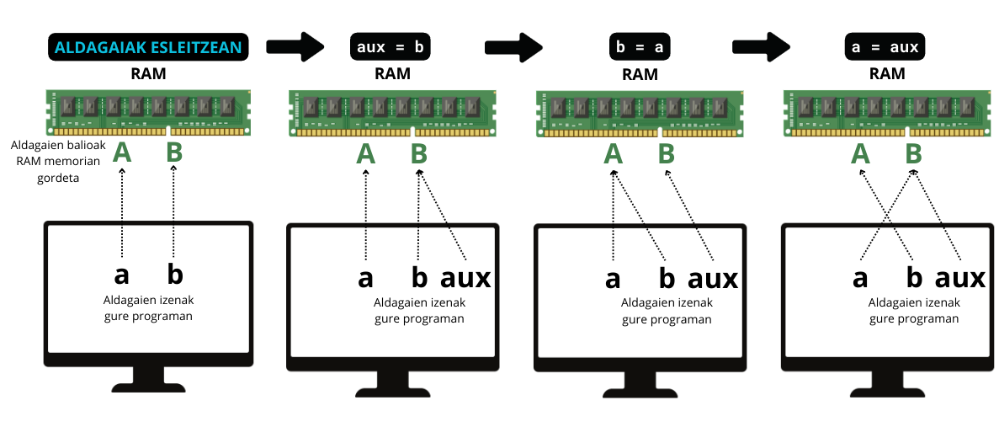

ALDAGAIEN PORTAERA ULERTU
Kodearen helburuaren arabera, aldagai mota ezberdinak beharko ditugu. Orain arte bi ikusi ditugu: zenbakiak eta tesua, baina gehiago daude.
- Zenbakiak
- String
- Boolearrak
- Zerrendak
- Tuplak
- Hiztegiak
- ...
Gainera, oso garrantzitsua da kode guztian zehar sortutako aldagaiak nolakoak diren jakitea, bestela oso zaila da erroreak identifikatzea.
 NOLA JAKIN ZE ALDAGAI MOTA DEN?
NOLA JAKIN ZE ALDAGAI MOTA DEN?
type() funtzioarekin:
| aldagai_motak.py | |
|---|---|
1 2 3 4 5 6 7 8 9 10 11 12 13 14 15 | |
METODOAK eta FUNTZIOAK ALDAGAIETAN
Honen ondoren, aldagai motak ikusten hasiko gara banan-banan. Baina garrantzitsua da hasi aurretik ulertzea Pythonek metodo eta funtzio prediseinatu (built-in) batzuk dituela, aldagai motaren arabera erabili ditzakegunak.
Adibidez, len() funtzioak luzeera itzuliko dit:
| funtzioak.py | |
|---|---|
1 | |
upper() metodoak berriz, hitz bat maiuskulaz jarriko dit:
| metodoak.py | |
|---|---|
1 | |
ZERGATIK DA GARRANTZITSUA FUNTZIOAK ETA METODOAK BEREIZTEA?
METODOAK
Metodo bat aldagai mota bati lotuta dago beti. Hau da str batentzat pentsatua dagoen metodoa ezin dugu list batentzat erabili.
Metodoa erabiltzeko aldagaia.metodoaren_izena(argumentuak) formatua erabiltzen da. Batzuetan ez dago argumentu beharrik eta orduan parentesia hutsik uzten da. Adibidez, upper() metodoa testuentzat soilik da.
| metodoak.py | |
|---|---|
1 | |
| errorea.py | |
|---|---|
1 2 3 4 | |
FUNTZIOAK
Funtzio bat unibertsala da. Edozein aldagai motari aplikatu diezaiokegu orokorrean.
funtzioaren_izena(aldagaiak) formatua jarraitzen dute. Guk ikasiko dugu gure funtzio propioak sortzen, baina Pythonek guk nahi duguna egiten duen bat badauka zergatik ez erabili? built-in functions deitzen zaie.
Ondorengo adibidean len() funtzioa erabiltzen dugu str baterako lehendabizi eta list baterako gero. Hau da, funtzioa bi aldagai mota ezberdinei aplikatu ahal izan diegu.
| funtzioak.py | |
|---|---|
1 2 3 4 | |
In-place vs. Berria itzultzea:
Metodo askok objektua aldatzen dute (in-place), funtzioek berriz, kopia bat itzultzen dute (berria). Hau ulertzeko azter dezagun ordenatzeko balio duten ondorengoak:
sorted()funtzioasort()zerrendentzako metodoa.
| sorted()_funtzioa.py | |
|---|---|
1 2 3 4 | |
| sort()_metodoa_gaizki.py | |
|---|---|
1 2 3 4 | |
HORRELA EGIN BEHARKO LITZATEKE:
| sort()_metodoa_ondo.py | |
|---|---|
1 2 3 | |
Metodoak erabiltzea oso erosoa da datu originalak behar ez ditugunean. Baina datu originala galdu nahi ez dugunean ezin ditugu erabili, edota aldagai auxiliar batean gorde behar dugu originala. Badaude metodo batzuk kopia itzultzen dutenak, horregatik da hain garrantzitsua dokumentazioa irakurtzea, ulertzea eta interpretatzen jakitea. Gainera, beti egin ditzakegu frogak metodo eta funtzio bakoitzak nola funtzionatzen duen ikasteko.
Dokumentazioa: Funtzioak eta Metodoak
Pythonen built-in types eta bakoitzaren metodoak: https://docs.python.org/3/library/stdtypes.html
Pythonen built-in funtzioak: https://docs.python.org/3/library/functions.html
NON DAUDE ALDAGAIAK KODEA EXEKUTATZEN DEN BITARTEAN?
Aldagaiak memorian gordetzen dira kodea exekutatzen den bitartean.
-
Memoria Nagusia (RAM): Aldagaiak programa martxan dagoen bitartean RAM-ean daude. Adibidez:
kolorea = "urdina"→"urdina"RAM-eko leku batean gordetzen da. Aldagai gehiegi edo handiegiak erabiliz gero, programa moteldu daiteke, edota memoria nahikoa ez badugu, funtzionatzeari utzi diezaioke. Horregatik garrantzitsua da ahalik eta kode optimizatuena idaztea. -
CPU-ko Erregistroak: Aldagaiak maiz erabiltzen badira, CPU-ak bere erregistroetan gorde ditzake (azkarrago exekutatzeko).
Programa amaitzen denean RAM garbitzen da: aldagai guztiak ezabatzen dira eta beste programa batzuentzat lekua askatzen da. Programa amaitzean aldagaien bat gorde nahi badugu, datu-base bat edo fitxategi bat erabili beharko dugu.
Hau ulertzeko bi aldagaien balioen trukaketa nola egiten den adierazten duen adibide bat aztertuko dugu:
Demagun hasieran a eta b aldagaiak ditugula beraien balioekin: 'A' eta 'B', hurrenez hurren. Baina alderantziz izatea nahi dugu. Hau da, amaieran a = 'B' eta b = 'A'
Ezin dugu hau egin, ikusi azpiko kodea eta irudia batera:
| aldagaien_trukaketa_gaizki.py | |
|---|---|
1 2 3 4 5 6 | |
Trukaketa egiteko auxiliar bat erabili beharrean gaude:
| aldagaien_trukaketa_ondo.py | |
|---|---|
1 2 3 4 5 6 7 | |

JARRI PRAKTIKAN
1.ARIKETA
Kopiatu ondoko kodea zure ordenagailuan:
import random
a = random.randrange(100)
b = random.randrange(100)
c = random.randrange(100)
print('ALDAGAIEN BALIO ORIGINALA')
print('a: ', a, ', b: ', b, ', c: ', c)
# Zure kodea hemen joango da
print('ALDAGAIEN BALIO ALDATUA')
# Hemen inprimatuko duzu- lehen a-ren balioa zena orain b-rena izango da.
- lehen b-ren balioa zena orain c-rena izango da.
- lehen c-ren balioa zena orain a-rena izango da
Espero den emaitza horrelako zerbait izango da (ezin dut zehazki esan pythonek ausaz aukeratuko baititu balioak):
ALDAGAIEN BALIO ORIGINALA
a: 16, b: 65, c: 33
ALDAGAIEN BALIO ALDATUA
a: 33, b: 16, c: 65